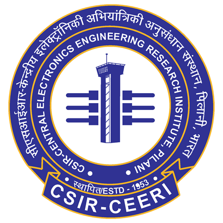

|
|
{kind=link}
|
I am a pre-final year undergraduate student at Birla Institute of Technology and Science Pilani where I'm pursuing my Bachelor's in Computer Science and Information Systems. My research interests include Autonomous Mobile Robotics, Deep Learning, Computer Vision and casual ML. I am also open to explore Comupter Networks and Systems. I am currently working with Dr. Amit Setia on developing an algorithm that makes use of Haar wavelets transformation for mapping areas using a drone. I have also interned at CSIR - CEERI, Pilani where I worked under Dr. Dhiraj Sangwan on digital restoration of Damaged Rajasthani Wall Murals using Deep Learning Techniques. We developed an end-to-end pipeline that included dataset preparation, pre-processing, damage segmentation and inpainting. Our paper has been selected for International Conference for Computer Vision and Image Processing 2023 I am the current Autonomous Subsystem lead of Project Kratos, a student-run multidisciplinary team that is making a Mars Rover capable of autonomous traversal. We are currently developing RTK-GNSS for accurate GPS coordinates, and mapping and planning techniques using Pointclouds and Visual-Inertial Odometry (VIO) from Zed 2i. I was also a core member of Electronics and Robotics Club, where we worked with swarmbots and how they traverse. I'm actively looking for research internships and internship opportunities. Feel free to check out my CV or drop me an e-mail for a chat with me! |
|
Mar '23 |
Project Kratos released the 2024 SDDR for the Internation Rover Challenge '24. Watch it here! |
|
Sep '23 |
Research paper on digital restoration of Rajasthani Wall Murals accepted at CVIP2023. You can read the preprint here! |
|
Aug '23 |
Completed Research Internship at CSIR-CEERI Pilani under Dr. Dhiraj Sangwan. |
|
Jun '23 |
I will be an Instructor for a student-led course on ROS and Robotics through the Quark Summer Technical Projects. |
|
May '23 |
Selected as Autonomous Subsystem Lead at Project Kratos. Will be guiding the Autonomous Subsystem for the year '23 - '24. |
|
Mar '23 |
Project Kratos released the 2023 SAR for the University Rover Challenge '23 Watch it here! |
|
Jan '23 |
Went to Internation Rover Challenge '23, which was held in Bangalore. Bagged "Best Overall Rover" award. |
|
Sep '22 |
Joined Project Kratos as a Crew Member. |
|
Aug '22 |
Selected as PMP Mentor. Will be guiding Freshmen throughout their first year at college. |
|
Apr '22 |
Joined Electronics and Robotics Club as a Crew Member. |
|

|
Jun '23 - Aug '23 Worked under the supervision of Dr. Dhiraj Sangwan on Digital Restoration of Rajasthani Wall Murals using Deep Learning Techniques. |

|
Damage Segmentation and Restoration of Ancient Wall Paintings for Preserving Cultural Heritage
|

|
Under submission. [preprint] In this paper, our focus is on constructing models to assist a clinician in the diagnosis of COVID-19 patients in situations where it is easier and cheaper to obtain X-ray data. We propose a new COVIDr dataset with important radiological annotations from a practicing radiologist. We build a deep neuro-symbolic model to diagnose COVID-19 and provide visual and textual explanations, with no significant loss in predictive accuracy compared to an end-to-end model. We find that the radiologist prefers simple representations, both visual and textual to aid in diagnosis. |

|
Accepted at IJCNN 2021. [preprint] [code] [video] [slides]
We propose an uncertainty-aware boosting technique for multi-modal ensembling in order to focus on the data points with higher associated uncertainty estimates, rather than the ones with higher loss values. We evaluate this method on healthcare tasks related to Dementia and Parkinson's disease which involve real-world multi-modal speech and text data, wherein our method shows an improved performance. Additional analysis suggests that introducing uncertainty-awareness into the boosted ensembles decreases the overall entropy of the system, making it more robust to heteroscedasticity in the data, as well as better calibrating each of the modalities along with high quality prediction intervals. |

|
Under submission. [preprint] [code] We propose a conceptually simple non-Bayesian approach, deep split ensemble, to disentangle the predictive uncertainties using a multivariate Gaussian mixture model. The NNs are trained with clusters of input features, for uncertainty estimates per cluster. Extensive analyses using dataset shits and empirical rule highlight our inherently well-calibrated models. Our work further demonstrates its applicability in a multi-modal setting using a benchmark Alzheimer’s dataset and also shows how deep split ensembles can highlight hidden modality-specific biases |

|
Accepted in the Student Abstract Program, AAAI 2021 [code] In this work, we propose a simple yet effective approach that clusters similar input features together using hierarchical clustering and then trains proportionately split neural networks with a joint loss. We evaluate this approach on a series of benchmark datasets and show promising improvements even with simple imputation techniques. |


|
Accepted for oral presentation at the TIA Workshop, MICCAI 2020. Built a pipeline comprising of models for lung isolation, followed by classification into different disease classes. We further augment our network with symptom embeddings produced by the CheXpert network and achieve excellent results. Our visualisation maps provide trustworthy and interpretable decisions to radiologists for clinical deployment. |

|
Accepted as a full paper at the MIL3ID Workshop, MICCAI 2020. [preprint] [slides] Studied the transfer of lesion knowledge across organs for lesion classifcation tasks. Our designed experiments on the lung and brain tumour datasets show that transfer learning using lesion-augmented models perform substantially better than models trained using random weights or lesion-agnostic(like ImageNet) transfer. |

|
Invited for an hour long talk at PyAstro 2020, Trinity College Dublin. [code] Built an open source image processing tool in Python to process multi-wavelength astronomy images. On registereing the images from different telescope to a common world coordinate system, they are convolved and re-sampled to a common pixel scale. These images are now put together to form an image cube, to help for easy analysis. |

|
Accepted as a full paper at ICISP 2020. [code] We developed a data analysis pipeline combining dataset extraction, segmentation, signal cleaning and filtration to detect the presence of sleep apnea using SVMs. On testing our approach on the MIT-Physionet dataset, we find that the low computational complexity makes it well suited for deployment on embedded devices such as the Raspberry Pi. |

|
Accepted at the Young Researcher's Symposium, CODS-COMAD 2021 Built a simple and scalable platform agnostic tool to aid online discussion forums using Social Network Analysis. We extract keywords from a chat, and list out the top users for this keyword and their activity histograms using a sliding window exponential ranking system. We have tested our methodology on Ubuntu IRC Logs and on our university chat for courses. |
This template is a modification to Jon Barron's website. Find the source code to my website here.